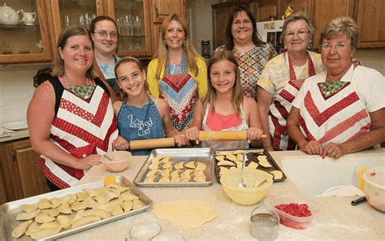

From Our Family to Yours
Pierogi Palace was born from a love of tradition and a passion for sharing hearty, comforting meals. Inspired by generations of pierogi-making in our family kitchen, we decided to bring that same warmth and joy to Santa Barbara.
Every pierogi we make is handcrafted with love, using recipes passed down through time and adapted with a modern twist. Located in the heart of the Paseo Nuevo Mall, we’re proud to serve locals, visitors, and food lovers of all kinds. Whether you’re craving savory or sweet, Pierogi Palace has something for everyone.